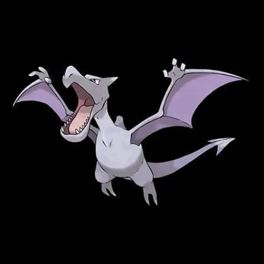
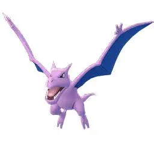
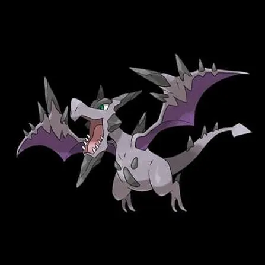
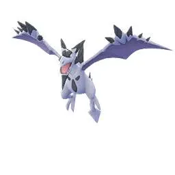

Mega Aerodactyl – What This Raid Boss Is
Mega Aerodactyl is a Mega Raid Boss in Pokémon GO. Key idea:
- You don’t catch the Mega form directly
- You defeat it to earn Mega Energy, then Mega Evolve your own Aerodactyl
Basic Traits:
- Type: Rock / Flying
- Role: High DPS attacker + team booster
- Known for:
- Fast attacks
- Strong Rock-type moves
1. Why Mega Aerodactyl Matters
A. Powerful Raid Booster
Its biggest value is:
- Boosting Rock-type attacks for your whole team
Real Impact:
- Makes raids faster
- Helps defeat tough bosses more easily
- Especially useful against:
- Flying Pokémon
- Fire Pokémon
B. Team Synergy Pokémon
Unlike normal attackers: Mega Aerodactyl:
- Improves everyone’s damage, not just its own
This makes it:
- Extremely valuable in group raids
- A strategic choice, not just a damage dealer
C. Useful for Farming
When Mega Evolved, it gives:
- Bonus candy
- Increased XL candy chance
Best for farming:
- Rock-type Pokémon
- Flying-type Pokémon
D. Long-Term Value
You keep using Mega Aerodactyl for:
- Future raids
- Events
- Candy farming
2. Difficulty Level
Overall Difficulty: ⭐⭐⭐☆☆ (Medium)
Why It’s Not Too Hard:
Advantages for Players:
- Has many weaknesses:
- Rock
- Water
- Electric
- Ice
- Steel
- Easy-to-get counters exist:
- Rhyperior
- Kyogre
What Makes It Challenging:
1. High Damage Output
- Fast attacks
- Strong charged move (Rock Slide)
2. Low Bulk but Fast Pressure
- Doesn’t last long
- But deals damage quickly
3. Punishes Mistakes
- Wrong team → quick fainting
- No dodging → heavy losses
Recommended Group Size
| Players | Difficulty |
|---|---|
| 1 | Nearly impossible |
| 2 | Very hard |
| 3 | Comfortable |
| 4-6 | Easy |
Bottom Line:
Why it matters:
- One of the best Rock-type Mega boosters
- Improves overall raid performance
Difficulty level: Medium – manageable with the right counters and team
Mega Aerodactyl Moveset Guide
1. Fast Moves
Fast moves generate energy and define battle speed.
Fast Moves Table
| Move Name | Type | Damage | Energy Gain | DPS | EPS | Notes |
|---|---|---|---|---|---|---|
| Rock Throw | Rock | 12 | 7 | High | Medium | Best overall |
| Steel Wing | Steel | 11 | 6 | Medium | Low | Niche |
| Bite | Dark | 6 | 4 | Medium | Medium | No special effects |
| Dragon Breath | Dragon | 6 | 4 | Low | Low | No special effects |
Explanation:
- Bite:
- Slight coverage vs Ghost/Psychic
- Low DPS
- Dragon Breath:
- Good vs Dragon
- Inferior DPS
- Rock Throw:
- Best for raids & PvE
- High damage + solid energy gain
- Steel Wing:
- Slight coverage vs Fairy/Ice
- But inferior DPS
Best Fast Move: Rock Throw
2. Charged Moves
Charged moves deal burst damage and consume energy.
Available Charged Moves
| Move Name | Type | Damage | Energy Gain | DPS | Notes |
|---|---|---|---|---|---|
| Earth Power | Ground | 100 | 50 | High | Medium DPS |
| Hyper Beam | Normal | 150 | 100 | Medium | High DPS |
| Ancient Power | Rock | 70 | 33 | Low | Weak |
| Rock Slide | Rock | 75 | 50 | High | Best move |
| Iron Head | Steel | 60 | 50 | Medium | Niche |
Explanation:
- Hyper Beam:
- Slight coverage vs Rock/Steel
- High DPS
- Earth Power:
- Good vs Electric
- Medium DPS
- Ancient Power:
- Too slow → low value
- Rock Slide:
- Fast, efficient, spammy
- Perfect for raids & gyms
- Iron Head:
- Only for coverage, not optimal
Best Charged Move: Rock Slide
Raid Boss Moves
When Mega Aerodactyl appears as a raid boss, it can use these moves.
Raid Boss Fast Moves
| Move | Type | Threat Level | Notes |
|---|---|---|---|
| Rock Throw | Rock | Medium | Strong STAB |
| Steel Wing | Steel | Low | Less dangerous |
Raid Boss Charged Moves
| Move | Type | Threat Level | Notes |
|---|---|---|---|
| Rock Slide | Rock | High | Very dangerous |
| Ancient Power | Rock | Medium | Slow |
| Iron Head | Steel | Medium | Coverage |
Most Dangerous Moves (Must Dodge)
These moves can wipe your team quickly.
High-Risk Moves
| Move | Why Dangerous | Impact |
|---|---|---|
| Rock Slide | Fast + high damage | Top threat |
| Rock Throw | Constant chip damage | Drains HP fast |
Strategy Tips:
- Dodge Rock Slide consistently
- Use:
- Water-types
- Electric-types
- Avoid:
- Flying-types (take super effective damage)
Best Moveset Summary
| Category | Best Move |
|---|---|
| Fast Move | Rock Throw |
| Charged Move | Rock Slide |
Optimal Combo: Rock Throw + Rock Slide
Expert Insight
Mega Aerodactyl’s moveset is:
- Simple but efficient
- Focused on Rock-type DPS
What makes it powerful:
- Fast pressure with Rock Throw
- Spam potential with Rock Slide
- Massive raid team boost
Mega Aerodactyl Raid Strategy Guide
1. Solo Strategy
Difficulty: ⭐⭐⭐⭐⭐ (Very Hard)
Reality Check:
- Solo is extremely difficult / nearly impossible unless:
- You have level 50 top counters
- Perfect IV Pokémon
- Weather boost advantage
Solo Requirements:
- Top counters like:
- Rampardos
- Rhyperior
- Kyogre
- Maxed teams (Level 45–50)
- Perfect dodging
Strategy:
- Focus on pure DPS
- Use Rock / Water attackers
- Dodge Rock Slide only (don’t over-dodge)
Verdict: Not recommended for most players
Duo Strategy
Difficulty: ⭐⭐⭐⭐☆ (Hard but duoable)
Best realistic minimum team size
Duo Requirements:
- Strong friendship bonus
- Weather boost (Rainy or Partly Cloudy)
- Level 35+ counters
Strategy:
- One player uses Mega evolution (preferably:
- Mega Blastoise
- Mega Swampert)
- Second player runs high DPS team
Key Tips:
- Coordinate dodging
- Rejoin quickly after fainting
- Avoid weak types like Flying
Verdict: Best challenge level for experienced players
Trio Strategy
Difficulty: ⭐⭐⭐☆☆ (Comfortable)
Trio Advantages:
- Less pressure on perfect counters
- More room for mistakes
Strategy:
- 1 Mega booster (Rock or Water)
- 2 players focus on DPS
Recommended Megas:
- Mega Aerodactyl (Rock boost)
- Mega Swampert (Water boost)
Verdict: Ideal for small groups
Beginner Strategy
Difficulty: ⭐⭐☆☆☆ (with group)
Focus:
- Survival > damage
What to Use:
- Any strong:
- Water types
- Electric types
- Examples:
- Vaporean
- Jolteon
Tips:
- Don’t worry about perfect movesets
- Dodge charged moves only
- Join raids with 5+ players
Goal: Learn mechanics
Intermediate Strategy
Difficulty: ⭐⭐⭐☆☆
Focus:
- Balanced gameplay (damage + survival)
What to Use:
- Proper counters:
- Rhyperior
- Gyarados
- Electivire
Tips:
- Use recommended movesets
- Understand dodging timing
- Start using Mega boosts
Goal: Improve efficiency
Advanced Strategy
Difficulty: ⭐⭐⭐⭐☆
Focus:
- Maximize DPS + synergy
Strategy:
- Build type-specific teams
- Use Mega strategically:
- Boost teammates constantly
Strong Picks:
- Rampardos
- Terrakion
- Kyogre
Recommended Megas:
- Pre-build multiple teams
- Time dodges perfectly
- Relobby fast
Goal: High efficiency raids
Expert Strategy
Difficulty: ⭐⭐⭐⭐⭐
Focus:
- Speed runs + optimization
Strategy:
- Coordinate Mega rotations
- Optimize:
- Weather boost
- Friendship bonus
- Use glass cannon teams
Elite Picks:
- Rampardos (Top DPS)
- Shadow Swampert
- Shadow Raikou
Expert Techniques:
- Dodge only when necessary
- Maintain continuous DPS
- Track boss move cycles
Goal: Minimum time clears
Final Strategy Summary
| Level | Players | Difficulty | Focus |
|---|---|---|---|
| Solo | 1 | Very Hard | Max DPS |
| Duo | 2 | ⭐⭐⭐⭐☆ | Coordination |
| Trio | 3 | ⭐⭐⭐☆☆ | Safe clears |
| Beginner | 5+ | ⭐⭐☆☆☆ | Survival |
| Intermediate | 3-5 | ⭐⭐⭐☆☆ | Balance |
| Advanced | 2-4 | ⭐⭐⭐⭐☆ | Optimization |
| Expert | 1-3 | ⭐⭐⭐⭐⭐ | Speed runs |
Final Insight
Mega Aerodactyl raids are all about:
- Using the right counters
- Leveraging Mega boosts
- Balancing DPS vs survival
It’s not the hardest raid—but becomes challenging at low player counts.
Mega Aerodactyl – Mode-by-Mode Performance Guide
1. PvP (Player vs Player)
Overall Verdict:
- Not viable in PvP leagues
- Reason: Mega evolutions are not allowed in standard PvP formats like:
- Great League
- Ultra League
- Master League
If Megas Were Allowed
- Strengths:
- Very high Attack stat
- Fast energy generation with Rock Throw
- Weaknesses:
- Extremely glass cannon
- Weak to common PvP types: Water, Electric, Ice
Conclusion: PvP is not where Mega Aerodactyl shines.
2. PvE
Role:
- Rock-type attacker
- Flying-type booster
Best Moveset:
| Type | Move |
|---|---|
| Fast Move | Rock Throw |
| Charged Move | Rock Slide |
Why It’s Good:
- Strong DPS for Rock-type damage
- Boosts:
- Rock-type allies
- Flying-type allies
Useful when fighting:
- Flying bosses
- Fire bosses
- Bug bosses
Raids
Primary Role: Mega Booster + Damage Dealer
Key Strength:
Mega Aerodactyl provides:
- 30% boost to Rock-type teammates
- 10% boost to other types
Performance:
| Role | Rating |
|---|---|
| Damage Output | ⭐⭐⭐⭐☆ |
| Team Boosting | ⭐⭐⭐⭐⭐ |
| Survivability | ⭐⭐⭐☆☆ |
Best Use Case:
Use Mega Aerodactyl when:
- Raid boss is weak to Rock-type
- You are in group raids
Example Targets:
- Yveltal
- Ho-Oh
- Rayquaza
Important Insight: Even if its personal DPS isn’t #1, the team boost makes it top-tier in raids.
4. Gyms (Attack & Defense)
Gym Attacking:
- Good against:
- Flying defenders
- Fire defenders
- Weak against:
- Water types
- Steel types
Works as a situational attacker, not a universal sweeper.
Gym Defense: Poor defender
Reasons:
- Low bulk
- Easily countered by:
- Machamp
- Metagross
Avoid placing in gyms.
Performance in Special Cups
Important Rule:
Megas are generally not allowed in special cups.
Not usable in:
- Great League Remix
- Element Cup
- Retro Cup
If allowed:
- Would act as:
- Fast shield pressure attacker
- But:
- Too fragile for extended fights
Final Summary Table
| Mode | Viability | Role |
|---|---|---|
| PvP | Not usable | - |
| PvE | Good | Rock attacker |
| Raids | ⭐⭐⭐⭐⭐ Top Tier | Mega booster |
| Gyms (Attack) | ⭐⭐⭐☆☆ | Situational |
| Gyms (Defense) | Poor | Not recommended |
| Special Cups | Not allowed | - |
Expert Insight
Mega Aerodactyl is not about solo power—it’s about team synergy.
Best strategy:
- Activate Mega Evolution before raid
- Coordinate with team using Rock-types
- Stay alive longer to maximize boost duration
Mega Aerodactyl Counters Guide
Weak Against:
| Type | Effectiveness |
|---|---|
| Rock | 2× |
| Water | 2× |
| Electric | 2× |
| Ice | 2× |
| Steel | 2× |
Key Insight:
Best types = Rock & Water
- Rock → Highest DPS
- Water → Better survivability
2. Top Counters (Top Tier)
These are the strongest raid counters combining DPS + survivability.
S-Tier Counters
| Pokémon | Best Moveset | Why It’s Strong |
|---|---|---|
| Rampardos | Smack Down + Rock Slide | Highest DPS |
| Rhyperior | Smack Down + Rock Wrecker | Bulk + power |
| Terrakion | Smack Down + Rock Slide | Balanced |
| Kyogre | Waterfall + Surf | Tanky + consistent |
| Zekrom | Charge Beam + Wild Charge | Electric DPS |
Why These Work:
- Hit double weaknesses
- High DPS output
- Reliable in all raid conditions
Best Counters (Mega + Shadow)
These give maximum raid efficiency.
Top Counters Table
| Pokémon | Type | Role | Why Best |
|---|---|---|---|
| Mega Swampert | Water | Mega Boost | Boosts Water team |
| Mega Blastoise | Water | Mega Boost | Safe + bulky |
| Mega Aerodactyl | Rock | Mega Boost | Boosts Rock team |
| Shadow Rampardos | Rock | Glass Cannon | Insane DPS |
| Shadow Swampert | Water | DPS + Bulk | Balanced |
Mega Strategy:
- Use 1 Mega in team
- Others use same type → boosted damage
Counters by Type Advantage
Rock-Type Counters (Best DPS)
| Pokemon | Moveset | Role |
|---|---|---|
| Rampardos | Smack Down + Rock Slide | Highest DPS |
| Rhyperior | Smack Down + Rock Wrecker | Tanky DPS |
| Tyranitar | Smack Down + Stone Edge | Reliable |
Use When:
- You want fast raid clears
- Short battle duration
Water-Type Counters
| Pokemon | Moveset | Role |
|---|---|---|
| Kyogre | Waterfall + Surf | Tanky |
| Swampert | Water Gun + Hydro Cannon | Balanced |
| Gyarados | Waterfall + Hydro Pump | Budget option |
Use When:
- Boss has Rock Slide
- You need survivability
Electric-Type Counters
| Pokemon | Moveset | Role |
|---|---|---|
| Zekrom | Charge Beam + Wild Charge | Strong DPS |
| Raikou | Thunder Shock + Wild Charge | Fast attacker |
Use When:
- No strong Rock/Water options
Ice-Type Counters
| Pokemon | Moveset | Role |
|---|---|---|
| Mamoswine | Powder Snow + Avalanche | High DPS |
Note:
- Strong but fragile
Steel-Type Counters
| Pokemon | Moveset | Role |
|---|---|---|
| Metagross | Bullet Punch + Meteor Mash | Durable |
What NOT to Use
Avoid:
- Flying types (double weakness)
- Fire types
- Bug types
Example Bad Picks:
- Charizard
- Pidgeot
Strategy Based on Boss Moves
If Boss Has Rock Slide:
- Use:
- Water types
- Avoid:
- Fragile Rock types
If Boss Has Iron Head:
- Use:
- Rock / Water safely
Universal Tip:
Dodge charged moves if:
- Using glass cannons like Rampardos
Final Counter Summary
| Category | Best Picks |
|---|---|
| Highest DPS | Rampardos |
| Safest | Kyogre |
| Best Mega | Mega Swampert |
| Budget | Gyarados |
| Balanced | Rhyperior |
Expert Insight
Winning Mega Aerodactyl raids is about:
- Correct typing (Rock/Water)
- Using Mega boosts
- Balancing DPS vs survival
Shiny Comparison – Mega Aerodactyl
Normal vs Shiny Appearance
Normal Aerodactyl:
- Body color: Grey / Stone-like
- Wings: Dark purple-grey
- Overall look: Classic fossil, rugged
Shiny Mega Aerodactyl:
- Pink/purple body with darker accents
- Rock spikes stand out more
- Looks more “ancient and wild”
2. Key Visual Difference
| Feature | Normal | Shiny |
|---|---|---|
| Body Color | Grey | Pink/Purple |
| Visibility | Subtle | Very noticeable |
| Rarity | Common | Rare |
3. Shiny Odds in Raids
Standard Mega Raid Odds:
- Approx 1 in 60 (~1.6%)
What This Means:
- You may need multiple raids
- Shiny is not guaranteed
4. Important Shiny Mechanics
Guaranteed Catch
- If you encounter a shiny: It is guaranteed catch
Best Strategy:
- Use:
- Pinap Berry
- Don’t risk missing throws
5. Is Shiny Worth Hunting?
YES if you:
- Collect shinies
- Play raids often
- Want rare Pokémon
Not necessary if:
- You only care about performance
- Shiny gives no stat advantage
6. Shiny Value Insight
Why shiny Aerodactyl is valuable:
- Strong Mega + rare shiny
- Useful in raids AND collectible
- Recognizable design
Quick Comparison Summary
| Category | Normal | Shiny |
|---|---|---|
| Color | Grey | Pink/Purple |
| Collectible Value | Medium | ⭐⭐⭐⭐⭐ |
| Battle Strength | Same | Same |
| Rarity | Common | Rare |

Aerodactyl
Images are used for informational and educational purposes only. All rights belong to their respective owners.

Shiny Aerodactyl
Images are used for informational and educational purposes only. All rights belong to their respective owners.

Mega Aerodactyl
Images are used for informational and educational purposes only. All rights belong to their respective owners.

Shiny Mega Aerodactyl
Images are used for informational and educational purposes only. All rights belong to their respective owners.
Evolution & Buddy Distance – Mega Aerodactyl
1. Evolution – How It Works
Base Form:
- Aerodactyl is a standalone Pokémon
- It has:
- No pre-evolution
- No standard evolution
2. Mega Evolution Process
Step-by-Step:
- Catch or obtain Aerodactyl
- Collect Mega Energy (from raids)
- Mega Evolve into:
- Mega Aerodactyl
Energy Cost:
| Stage | Cost |
|---|---|
| First Mega Evolution | 200 Mega Energy |
| Future Evolutions | 40 Mega Energy |
3. Buddy Distance
Distance Required: 5 km per candy
Buddy Info Table:
| Feature | Value |
|---|---|
| Distance per Candy | 5 km |
| Category | Medium distance |
| Candy Gain Speed | Moderate |
4. Why Buddy Distance Matters
Candy Farming
Walking with:
- Aerodactyl
Helps you:
- Earn candy
- Power up
- Prepare for Mega Evolution
Mega Energy Bonus
After Mega Evolving once:
- Walking Aerodactyl can also give:
- Mega Energy
5. Common Mistakes
Mistake:
- Ignoring buddy system
Problem:
- Slower candy gain
- Harder to power up
Fix:
- Walk Aerodactyl regularly
- Use it during events
Evolution & Buddy Summary
| Feature | Details |
|---|---|
| Normal Evolution | None |
| Mega Evolution | Yes |
| First Mega Cost | 200 Energy |
| Buddy Distance | 5 km |
| Extra Benefit | Mega Energy after evolution |
Final Insight
Mega Aerodactyl is unique because:
- It doesn’t evolve traditionally
- It relies on Mega Evolution mechanics
- Buddy system becomes very important for long-term use
Best Mega Pokémon vs Mega Aerodactyl
Best Mega Counters (Top Tier)
These Megas give maximum raid value
Mega Swampert
Why It’s #1:
- Strong Water-type damage
- Excellent bulk
- Boosts Water-type teammates
Best Moveset:
- Water Gun
- Hydro Cannon
Best Use:
- Safe, consistent raids
- Small groups
Mega Blastoise
Why It’s Great:
- Very tanky
- Reliable damage
- Boosts Water team
Mega Aerodactyl
Why It’s Strong:
- Boosts Rock-type damage
- Helps entire team
Downside:
- Weak to its own type
- Faints faster
Mega Manectric
Why It’s Good:
- Strong Electric DPS
- Boosts Electric teammates
3. Situational Mega Counters
Mega Abomasnow
Pros:
- Ice-type damage
Cons:
- Weak to Rock
- Faints very fast
4. Defensive Mega Option
Mega Steelix
Why:
- Very bulky
- Resists many attacks
Downside:
- Low DPS
Mega Counter Comparison Table
| Mega | Damage | Bulk | Team Boost | Overall |
|---|---|---|---|---|
| Mega Swampert | ⭐⭐⭐⭐⭐ | ⭐⭐⭐⭐☆ | ⭐⭐⭐⭐⭐ | 1 |
| Mega Blastoise | ⭐⭐⭐⭐☆ | ⭐⭐⭐⭐⭐ | ⭐⭐⭐⭐⭐ | 2 |
| Mega Aerodactyl | ⭐⭐⭐⭐☆ | ⭐⭐⭐☆☆ | ⭐⭐⭐⭐⭐ | 3 |
| Mega Manectric | ⭐⭐⭐⭐☆ | ⭐⭐⭐☆☆ | ⭐⭐⭐⭐☆ | Good |
Candy Boost – How Mega Aerodactyl Helps You Catch More
1. Which Pokémon Get Candy Boost?
Mega Aerodactyl boosts candy for:
| Type | Boosted |
|---|---|
| Rock-type | Yes |
| Flying-type | Yes |
2. What Bonuses Do You Get?
Standard Bonus: +1 extra candy per catch
Higher Mega Levels:
| Mega Level | Bonus |
|---|---|
| Base | +1 candy |
| High Level | +2 candy |
| Max Level | +3 candy + XL chance |
3. Best Pokémon to Farm With It
Rock-Type Examples:
- Larvitar
- Rhyhorn
- Cranidos
Flying-Type Examples:
- Pidgey
- Zubat
- Starly
4. When Should You Use Mega Aerodactyl?
Best Situations:
- Community Days
- Spotlight Hours
- Events with boosted spawns
5. Common Mistake
Mistake:
- Using Mega Aerodactyl randomly
Problem:
- No benefit if Pokémon types don’t match
Fix:
- Catching Rock or Flying Pokémon
6. Advanced Strategy
Mega Rotation:
- Rock/Flying event → Mega Aerodactyl
- Water event → switch Mega
Candy Boost Summary
| Feature | Benefit |
|---|---|
| Boost Types | Rock, Flying |
| Extra Candy | +1 to +3 |
| XL Candy | Increased chance |
| Best Use | Events & farming |
Mega Aerodactyl Weaknesses
Main Weaknesses (2× Damage)
Mega Aerodactyl is also weak to several other types:
Weakness Table
| Type | Effectiveness | Notes |
|---|---|---|
| Rock | 2× | Flying is weak to Rock |
| Water | 2× | Rock is weak to Water |
| Electric | 2× | Flying is weak to Electric |
| Ice | 2× | Flying is weak to Ice |
| Steel | 2× | Rock is weak to Steel |
2. Most Dangerous Weaknesses
Rock-Type
- Deals strong damage
- Many high DPS Pokémon use Rock moves
Water-Type
- Strong + bulky
- Survive longer
Electric-Type
- Quick attacks
- Good fallback option
3. Situational Weaknesses
These are effective but slightly less optimal:
Ice-Type
- High damage
- But fragile
Steel-Type
- More defensive
- Lower DPS
4. Why It Feels Easy to Beat
Mega Aerodactyl feels easier than some Mega raids because:
- It has many weaknesses
- Popular Pokémon counter it easily
- Common types (Water, Electric) are effective
5. Hidden Weakness Problem
Real Issue:
- Low stamina
- Takes heavy damage quickly
Result:
- Weaknesses + low bulk = fast HP drop
- Makes it easier for small teams
Strategy Based on Weakness
Best Strategy:
- Use Rock-type attackers for speed
- Use Water-types for safety
Avoid:
- Using types it resists (like Bug or Fire)
- Ignoring its fast attacks
Weakness Priority Summary
| Category | Type |
|---|---|
| Main Weaknesses | Rock, Water, Electric |
| Secondary Weaknesses | Ice, Steel |
| Total Weakness Count | 5 types |
Final Insight
Mega Aerodactyl is a classic example of:
- Not bulky
- Many weaknesses
- Easy to counter with the right team
Mega Aerodactyl Resistances
1. Resistances
These are types where Mega Aerodactyl takes reduced damage.
Standard Resistances
| Type | Damage Taken | Reason |
|---|---|---|
| Normal | ~0.62× | Rock resists Normal |
| Flying | ~0.62× | Rock resists Flying |
| Poison | ~0.62× | Rock resists Poison |
| Fire | ~0.62× | Rock resists Fire |
| Bug | ~0.39× | Double resistance |
Key Insight
- Bug-type moves are heavily resisted
- Good vs Fire, Flying, and Bug bosses
2. Neutral Damage
These types deal normal damage:
- Dark
- Ghost
- Psychic
- Dragon
- Fairy
3. Weakness Reminder
Even though this is a resistance section, understanding weaknesses helps avoid mistakes.
Weak To:
| Type | Damage |
|---|---|
| Water | 2× |
| Electric | 2× |
| Ice | 2× |
| Rock | 2× |
| Steel | 2× |
4. Practical Raid Impact
When Resistances Help
Mega Aerodactyl performs better against:
- Bug-type raid bosses
- Fire-type raid bosses
- Flying-type raid bosses
Where Resistances Don’t Help
Against:
- Water or Electric bosses
- Rock-heavy movesets
5. Strategy Insight
Use Mega Aerodactyl when:
- Boss uses:
- Bug moves
- Fire moves
Avoid Using When:
- Boss has:
- Water attacks
- Electric attacks
- Rock Slide
Resistance Summary Table
| Category | Types |
|---|---|
| Double Resistance | Bug |
| Single Resistance | Normal, Flying, Poison, Fire |
| Neutral | Dark, Ghost, Psychic, Dragon, Fairy |
| Weakness | Water, Electric, Ice, Rock, Steel |
Final Insight
Mega Aerodactyl has solid but situational resistances.
- Strong vs Bug & Fire
- Weak vs common raid types
Final Conclusion – Mega Aerodactyl
Mega Aerodactyl is a high-value raid Pokémon focused on team performance rather than solo dominance. It may not be the bulkiest or the absolute top DPS attacker, but its true strength lies in boosting the entire team’s damage output.
Where It Excels
Raids (Top Tier)
- One of the best Rock-type Mega boosters
- Significantly increases team damage in group battles
PvE Performance
- Strong Rock-type attacker
- Effective against Flying, Fire, and Bug bosses
Team Synergy
- Amplifies the power of teammates
- Scales better in larger groups
Where It Falls Short
PvP
- Not allowed in:
- Great League
- Ultra League
- Master League
Low Bulk
- Faints faster than tanky Pokémon
- Requires smart dodging and team balance
Gym Defense
- Not reliable due to low survivability
Key Takeaways
- It’s not just about its own damage
- It’s about boosting your entire raid team
Best used when:
- Coordinating with other players
- Running Rock-type teams
- Optimizing raid efficiency
Final Recommendation
YES, Mega Aerodactyl is absolutely worth raiding. Especially if you:
- Play raids regularly
- Want faster raid clears
- Care about team optimization
Expert Final Insight
Mega Aerodactyl is not a “solo carry” Pokémon. It’s a strategic powerhouse:
- Beginners see → a strong attacker
- Experts see → a team-wide damage amplifier
Mega Aerodactyl Catch CP Guide
After defeating the raid, you catch regular Aerodactyl (not Mega).
1. Catch CP Ranges
Normal Weather
| IV Level | CP Range |
|---|---|
| 100% IV (Perfect) | 1590 CP |
| 98% IV | 1580-1589 CP |
| 96% IV | 1570-1579 CP |
| 93% IV | 1560-1569 CP |
| Lowest Possible | ~1490 CP |
Windy Weather
| IV Level | CP Range |
|---|---|
| 100% IV (Perfect) | 1987 CP |
| 98% IV | 1970-1986 CP |
| 96% IV | 1950-1969 CP |
| 93% IV | 1930-1949 CP |
| Lowest Possible | ~1860 CP |
2. Why These CP Values Matter
Each CP corresponds to:
- A fixed level
- Specific IV combination
Key Levels:
| Condition | Level |
|---|---|
| Normal Weather | 20 |
| Weather Boosted | 25 |
3. How to Identify a 100% IV Quickly
Memorize These:
- 1590 CP → 100% IV
- 1987 CP → 100% IV
4. High Priority CP Range
Even if not perfect, these are worth catching:
- Normal Weather: 1570+ CP → Very strong
- Weather Boost: 1950+ CP → High IV
5. Low CP Warning
Example:
- Below 1520 (normal)
- Below 1900 (boosted)
6. Catch Strategy Based on CP
If CP is High
Do this:
- Golden Razz Berry
- Curveball
- Excellent throw
- Take your time
If CP is Medium
Do this:
- Still use Golden Razz
- Aim for Great/Excellent
If CP is Low
Do this:
- Use Pinap Berry
- Faster throws
7. Pro Tip: CP vs IV Reality
- High CP ≠ Always perfect IV
- But:
- Higher CP = higher chance of good IV
8. Quick Reference Table
| Condition | 100% CP | Strong CP |
|---|---|---|
| Normal | 1590 | 1570+ |
| Windy | 1987 | 1950+ |
Final Insight
The moment you see the CP, you should already know:
- Catch priority
- Berry choice
- Throw focus
Weather Boost – Mega Aerodactyl
1. Which Weather Boosts Mega Aerodactyl?
Boosted Weather: Windy
What Gets Boosted:
| Aspect | Effect |
|---|---|
| Aerodactyl CP | Higher |
| Catch Level | Higher |
| Moves boosted | Flying-type moves |
2. Weather That Helps YOU
Sometimes weather helps your team more than the boss
Partly Cloudy
Boosts:
- Rock-type moves
Why:
- Your Rock counters get boosted
- Boss does NOT get stronger from Rock boost
Rainy Weather
Boosts:
- Water-type moves
- Electric-type moves
3. Dangerous Weather Conditions
Windy Weather
Pros:
- Higher CP → better IV chance
Cons:
- Boss deals more damage
- Harder to defeat
4. Weather Strategy
Best Weather to Raid
| Weather | Result |
|---|---|
| Partly Cloudy | ⭐⭐⭐⭐⭐ |
| Rainy | ⭐⭐⭐⭐☆ |
Worst Weather
| Weather | Problem |
|---|---|
| Windy | Boss stronger |
| Snowy | Fragile counters faint faster |
5. Catch Phase Impact
In Windy Weather:
- Higher CP encounter
- Harder to catch
- Better IV chance
Tip:
- Use:
- Golden Razz Berry
- Excellent throws
6. Pro Insight
Weather is one of the most underrated advantages in raids
Example:
- No weather boost → Normal difficulty
- Partly Cloudy → Raid feels much easier
- Windy → Raid feels harder instantly
Final Weather Strategy Summary
| Situation | What To Do |
|---|---|
| Want easy win | Raid in Partly Cloudy |
| Want safe play | Use Rainy weather |
| Want high IV catch | Try Windy |
| Small group raid | Avoid Windy |
Final Insight
Mega Aerodactyl raids are heavily influenced by weather.
- Beginners ignore weather
- Experts plan raids around weather
Is Mega Aerodactyl Worth Raiding?
1. Biggest Reason: Top-Tier Mega Boost
Why it matters:
- Mega Aerodactyl boosts:
- Can be beaten with small groups
- Great for farming Mega Energy quickly
Real Impact:
- In group raids, it can:
- Increase total team damage significantly
- Help defeat bosses faster
Especially strong vs:
- Flying bosses
- Fire bosses
2. Strong Rock-Type Attacker
Pros:
- High Attack stat
- Fast damage output
- Great for PvE content
Cons:
- Low bulk → faints faster than tanky options
Verdict:
- Good attacker, but not always the #1 pick compared to glass cannons like: Rampardos
3. Extremely Valuable for Group Raids
Key Insight:
- Mega Aerodactyl becomes more valuable with more players
Why:
- Its boost affects everyone
- More players = more boosted damage
In 5+ player raids:
- It’s often more valuable than another attacker
4. Great for Candy & XL Farming
Hidden Benefit:
Mega Evolution gives:
- Bonus candy
- Increased XL candy chance
Use Mega Aerodactyl when farming:
- Rock-type Pokémon
- Flying-type Pokémon
5. Where It’s NOT Worth It
PvP:
- Not usable in:
- Great League
- Ultra League
- Master League
Gym Defense:
- Low bulk
- Easily countered
6. Cost vs Value
| Factor | Value |
|---|---|
| Raid Difficulty | Medium |
| Mega Energy Cost | Moderate |
| Long-Term Use | High |
| PvP Use | None |
7. Who SHOULD Raid It?
You should raid if:
- You play raids regularly
- You want a strong Mega booster
- You farm candy efficiently
You can skip if:
- You only play PvP
- You already have multiple strong Rock Megas
- You don’t care about Mega bonuses
Final Verdict
| Category | Rating |
|---|---|
| Raid Value | ⭐⭐⭐⭐⭐ |
| PvE Value | ⭐⭐⭐⭐☆ |
| PvP Use | ❌ |
| Overall Worth | ⭐⭐⭐⭐☆ |
Final Verdict
Mega Aerodactyl is not just about its own damage. It’s about:
- Boosting your entire team
- Speeding up raids
- Improving farming efficiency
Personal Raid Experience – Mega Aerodactyl
First Impression
The moment the raid starts, you notice one thing immediately:
It’s fast.
- Mega Aerodactyl moves a lot
- Attacks come quickly
- HP drops steadily but not too fast
Early Battle Phase
I started with a Rock-type heavy team:
- Rampardos
- Rhyperior
What Happened:
- Damage output was insane
- Boss HP dropped quickly
Lesson Learned:
- High DPS = fast clears
- But low survivability = frequent relobbies
Mid Battle Adjustment
After first team fainted, I switched to:
- Kyogre
- Bulkier Water types
Immediate Difference:
- Survived much longer
- More stable damage
- Less pressure to dodge perfectly
Facing Dangerous Moves
The biggest threat I encountered: Rock Slide
Experience:
- If I didn’t dodge → huge HP loss
- If I over-dodged → damage dropped
What Worked Best:
- Only dodge charged moves
- Ignore fast attacks
Group Coordination Experience
In a group of 4–5 players:
What I Noticed:
- When someone used:
- Mega Aerodactyl
Real Impact:
- Team damage increased
- Boss HP dropped quicker than expected
Relobby Moment
At one point: Entire team fainted
Mistake: Took too long to rejoin
Result:
- Lost valuable seconds
- Nearly failed a tight raid
Lesson:
- Fast relobbying = critical in small groups
Final Phase
This is where the raid feels intense:
- Timer starts to matter
- Mistakes become costly
What Worked:
- Staying consistent
- No panic throwing
- Keeping DPS steady
Catch Phase Experience
Catching Aerodactyl was actually harder than the raid:
- Moves side to side a lot
- Feels far away
- Small hitbox
What Helped:
- Circle lock technique
- Waiting for attack animation
- Curveball Excellent throws
Key Personal Lessons
1. Balance is Everything
- Full glass cannon team = risky
- Mix of DPS + bulk = best
2. Mega Boost Matters More Than You Think
- One Mega can change the raid outcome
3. Dodging Smart > Dodging More
- Only dodge important moves
4. Relobby Speed Can Decide the Raid
- Especially in Duo/Trio runs
5. Catching Requires Patience
- Don’t rush throws
- Timing > speed
Real Experience Summary
| Aspect | Experience |
|---|---|
| Difficulty | Medium |
| Stress Level | Moderate |
| DPS Requirement | High |
| Mistake Punishment | High |
| Catch Difficulty | Medium-High |
Final Personal Insight
Mega Aerodactyl is a skill-check raid.
- If you play casually → feels tough
- If you play smart → becomes easy
Unique Insights – Mega Aerodactyl
1. It’s a “Team Multiplier,” Not Just an Attacker
Most players think: Use the highest DPS Pokémon. But the real strength of Mega Aerodactyl is: Multiplying total team damage
Insight:
- A single Mega Aerodactyl can increase overall raid DPS more than another attacker
- Especially powerful in:
- 4–10 player lobbies
Hidden Advantage: Even if it faints early, the boost it provides during its uptime is massive
2. Rock-Type Mega Is Rare & Extremely Valuable
Why This Matters: Rock-type Megas are limited compared to Water/Fire
This makes Mega Aerodactyl:
- A default choice for Rock-type boosting
- Essential for raids against:
- Flying bosses
- Fire bosses
Strategic Impact:
In events featuring Flying legendaries, this Mega becomes meta-defining
3. DPS vs Survivability Trade-Off
Two Playstyles:
| Style | Pokémon Example | Result |
|---|---|---|
| Glass Cannon | Rampardos | High DPS, frequent faint |
| Tanky | Kyogre | Lower DPS, longer survival |
Insight:
- Mega Aerodactyl works best when: Your team balances both
- Pro teams: Mix 3 glass cannons + 3 bulky attackers
4. It Performs Better in Groups Than Solo
Hidden Truth:
- Many Pokémon scale linearly
- Mega Aerodactyl scales exponentially with team size
Why:
- Boost affects all players
- More players = more boosted damage
Result:
- In 6+ player raids, it becomes top-tier
5. Its Biggest Weakness Isn’t Typing—It’s Bulk
Common Misunderstanding: Players think weaknesses are the main issue
Reality:
The real issue is:
- Low stamina
Impact:
- Faints faster than bulky Megas like:
- Mega Blastoise
This reduces boost uptime if not managed properly
6. Move Simplicity = Strategic Advantage
Why It Matters: Mega Aerodactyl has simple, focused moveset
Hidden Benefit:
- No confusion about:
- Best moves
- TM usage
Compared to complex Pokémon:
- Easier for beginners
- Faster optimization
7. Weather Synergy Can Flip Performance
Example:
- Partly Cloudy → boosts Rock moves
- Rainy → boosts Water counters
Insight:
Depending on weather:
- Mega Aerodactyl can go from:
- Good → Top-tier
8. It Punishes Bad Players Harder Than Most Bosses
Why:
- Fast attacks
- Strong Rock Slide spam
Result:
- Poor teams get wiped quickly
- Weak coordination leads to failure
This makes it a: Skill-check raid boss
9. Mega Rotation Strategy
Expert Strategy: Instead of one Mega:
Rotate Megas across players:
- Player 1 uses Mega Aerodactyl
- Player 2 uses Mega Swampert
Benefit:
- Continuous team boosts
- Maximum uptime
10. It’s One of the Best “Event Farming Megas”
Why:
Mega boosts also affect:
- Candy bonus
- XL Candy chance
Use Mega Aerodactyl when farming:
- Rock-type Pokémon
- Flying-type Pokémon
Final Insight Summary
| Insight | Impact |
|---|---|
| Team multiplier | Massive group value |
| Rare Rock Mega | High meta importance |
| Glass cannon nature | Needs skill |
| Group scaling | Stronger with more players |
| Simple moveset | Easy optimization |
Final Unique Insight
Mega Aerodactyl is not just a Pokémon—it’s a raid strategy tool.
- Beginners see → damage
- Experts see → team amplification system
Frequently Asked Questions
1. Is Mega Aerodactyl good in Pokémon GO?
Yes—especially in raids.
- One of the best Rock-type Mega Pokémon
- Provides strong team damage boosts
- Excellent for fighting Flying, Fire, and Bug raid bosses
2. Can Mega Aerodactyl be used in PvP?
No.
- Mega Evolutions are not allowed in:
- Great League
- Ultra League
- Master League
3. What is the best moveset for Mega Aerodactyl?
Best moveset:
- Fast Move: Rock Throw
- Charged Move: Rock Slide
- High DPS
- Fast energy generation
4. What is Mega Aerodactyl weak against?
It is weak to:
- Rock
- Water
- Electric
- Ice
- Steel
These are your best counter types
5. How many players are needed to defeat Mega Aerodactyl?
| Players | Difficulty |
|---|---|
| 1 | Almost impossible |
| 2 | Very hard |
| 3 | Comfortable |
| 4-6 | Easy |
6. What are the best counters for Mega Aerodactyl?
Top counters include:
- Rampardos
- Rhyperior
- Kyogre
- Zekrom
7. How do you get Mega Aerodactyl?
Steps:
- Defeat Mega Aerodactyl in raids
- Earn Mega Energy
- Mega Evolve your Aerodactyl
8. How much Mega Energy is required?
| Evolution | Energy Cost |
|---|---|
| First time | 200 |
| After that | 40 |
9. Can Mega Aerodactyl be shiny?
Yes!
- Shiny Aerodactyl is available
- Its Mega form will also be shiny
Shiny color:
- Pink/purple body instead of grey
10. Is Mega Aerodactyl worth Mega Evolving?
Yes, absolutely.
- Boosts Rock & Flying types
- Great for raid teams
- Useful in events and farming
11. What is Mega Aerodactyl’s role in raids?
It acts as:
- Damage dealer
- Team booster
Its biggest strength is boosting other players’ Pokémon
12. What weather boosts Mega Aerodactyl?
Boosted in:
- Windy weather
This increases:
- CP
- Difficulty
- IV potential
13. Is Mega Aerodactyl good for gyms?
Mixed performance
- Attack: Decent
- Defense: Poor (low bulk)
14. Does Mega Aerodactyl have any Elite moves?
No.
- No exclusive or legacy moves
- No need for Elite TM
15. What makes Mega Aerodactyl special?
Key highlights:
- One of the strongest Rock-type Megas
- Excellent team synergy
- Fast and aggressive playstyle
Final FAQ Insight
Mega Aerodactyl is not just about raw power—it’s about:
- Boosting your entire raid team
- Speeding up raid clears
- Maximizing efficiency
Mega Aerodactyl – Pokédex Overview
Basic Information
| Attribute | Details |
|---|---|
| Pokédex Number | 142 |
| Type | Rock / Flying |
| Category | Fossil Pokémon |
| Height | 2.1 m |
| Weight | 79 kg |
Pokédex Description
Mega Aerodactyl is the fully powered, ancient form of Aerodactyl. When it Mega Evolves, its body becomes more rugged and aggressive, with rock-like growths forming around its wings and tail.
According to Pokédex lore:
- Its transformation awakens its prehistoric instincts
- It becomes more violent and faster
- The rocky protrusions act as natural weapons
It represents what Aerodactyl might have been like in its prime era millions of years ago.
Stats Overview (Level 40)
| Stat | Value |
|---|---|
| Attack | 241 |
| Defense | 181 |
| Stamina | 207 |
Stat Insight:
- Extremely high Attack
- Moderate Defense
- Low bulk → glass cannon
It represents what Aerodactyl might have been like in its prime era millions of years ago.
Max CP
| Level | CP |
|---|---|
| Level 40 | ~4655 |
| Level 50 | ~5244 |
One of the strongest Rock-type Megas in terms of CP.
Abilities
| Ability | Effect |
|---|---|
| Tough Claws | Boosts contact moves |
This ability explains its enhanced physical damage output.
Mega Evolution Details
| Feature | Details |
|---|---|
| Boost Type | Rock & Flying |
| Bonus | Boosts same-type attacks in raids |
| Duration | 8 hours |
Strengths & Weaknesses
Strengths:
- Strong against:
- Fire
- Flying
- Bug
- Ice
Weaknesses:
| Type | Effect |
|---|---|
| Water | Super Effective |
| Electric | Super Effective |
| Ice | Super Effective |
| Rock | Super Effective |
| Steel | Super Effective |
Habitat & Origin
- Revived from:
- Old Amber fossil
- Region:
- Kanto
Appearance
- Sharper, more aggressive design
- Rock spikes covering body
- Larger wingspan
- Fiercer expression
Role
| Category | Role |
|---|---|
| PvE | Rock-type attacker |
| Raids | ⭐⭐⭐⭐⭐ Mega booster |
| PvP | Not usable |
| Gyms | Situational attacker |
Fun Facts
- One of the oldest fossil Pokémon
- Mega form emphasizes its true prehistoric strength
- Known for speed and aggression
Final Insight
Mega Aerodactyl is not just a powerful Mega—it’s a team support monster in raids. It combines:
- High DPS
- Strong Mega boosts
- Unique prehistoric design
How to Catch Mega Aerodactyl Easily
After defeating the raid, you encounter regular Aerodactyl, not the Mega form.
1. Use Golden Razz Berry
Best Berry:
- Golden Razz Berry
Why It Works:
- Gives the highest catch rate boost
- Essential for high CP bosses
Strategy:
- Use Golden Razz on every throw
- Only switch if you run out:
- Silver Pinap (bonus candy + decent catch rate)
2. Master the Circle Lock Trick
What It Is:
- A technique to guarantee Great/Excellent throws
Steps:
- Hold the ball → set circle to Excellent size
- Release without throwing
- Wait for Aerodactyl to attack
- Throw during attack animation
Why It Works:
- Pokémon can’t move or attack again
- You hit consistent Excellent throws
3. Aim for Excellent Throws
Catch Bonus Multipliers:
| Throw Type | Catch Bonus |
|---|---|
| Nice | Small |
| Great | Medium |
| Excellent | Highest |
Tip:
- Aerodactyl is far and moves a lot
- Practice timing more than aim
4. Use Curveball Throws
Why:
- Curveballs give extra catch multiplier
Strategy:
- Always spin the ball before throwing
- Combine with Excellent throw for max effect
5. Be Patient
Mistake:
- Throwing randomly when it’s moving
Problem:
- Wasted balls
- Missed throws
Fix:
- Wait until it:
- Stops moving
- Starts attack animation
6. Watch Movement Pattern
Behavior:
- Moves left/right frequently
- Attacks often
Best Timing:
- Throw right after attack starts
7. Use Weather Boost Advantage
Boosted in:
- Windy weather
Effect:
- Higher CP → harder to catch
- Better IV chance
Tip:
- Be extra careful with throws during boost
8. Increase Catch Medals
Relevant Medal:
- Rock-type medal
Benefit:
- Higher catch rate for Rock Pokémon
Tip:
- Gold/Platinum medal = noticeable boost
9. Use AR Mode
Why:
- Pokémon stays centered
- Easier Excellent throws
Only if comfortable:
- Otherwise stick to normal mode
10. Maximize Balls Before Catch Phase
You Get More Balls By:
- More damage dealt
- Best friend bonus
- Gym control bonus
- Speed bonus
Strategy:
- Raid with friends
- Deal high damage
Best Catch Combo
Always combine:
- Golden Razz Berry
- Curveball
- Excellent Throw
This gives maximum catch probability
Pro Catch Flow
- Use Golden Razz Berry
- Set Excellent circle
- Wait for attack
- Throw curveball
- Repeat patiently
Common Catch Mistakes
| Mistake | Problem |
|---|---|
| Throwing randomly | Missed balls |
| No berries | Low catch rate |
| No curveball | Lose bonus |
| Ignoring timing | Harder hits |
Final Expert Insight
Catching Aerodactyl is tricky because:
- It’s far away
- Moves a lot
- Small hitbox
But once you master:
- Circle lock
- Curveball Excellent throws
You can reach 80–90%+ catch success rate
Common Raid Mistakes:
1. Using Wrong Types
Mistake:
Bringing Pokémon that are:
- Flying
- Fire
- Bug
Examples:
- Charizard
- Pidgeot
Why It’s Bad:
- Mega Aerodactyl uses Rock-type moves
- These types take super effective damage
- Your team faints quickly → time loss
Fix:
Use:
- Rock types
- Water types
- Electric types
2. Ignoring Double Weakness Advantage
Mistake:
Not prioritizing Rock/Water counters
Why It’s Bad:
- Mega Aerodactyl is double weak to multiple types
- Using neutral damage = slower raids
Fix:
Prioritize:
- Rampardos
- Kyogre
- Rhyperior
You’ll finish raids faster and safer
3. Not Using a Mega Evolution
Mistake:
No Mega Pokémon in raid team
Why It’s Bad:
- You lose:
- 30% same-type boost
- Team synergy bonus
Fix:
Use at least one Mega:
- Mega Swampert
- Mega Aerodactyl
One Mega boosts the entire team’s damage
4. Over-Dodging or Under-Dodging
Mistake 1: Over-dodging
Dodging every move
Mistake 2: No dodging
Ignoring charged moves
Why It’s Bad:
- Over-dodging → low DPS
- No dodging → team wipes fast
Fix:
- Only dodge charged moves
- Especially:
- Rock Slide (very dangerous)
5. Using Recommended Team Blindly
Mistake:
Auto-select team from game
Why It’s Bad:
- Game often suggests:
- Bulky but weak attackers
- Leads to:
- Low damage output
Fix:
Manually pick counters like:
- Terrakion
- Zekrom
6. Not Relobbying Quickly
Mistake:
Waiting too long after fainting
Why It’s Bad:
- Lost time = possible raid failure
- Especially in:
- Duo / Trio raids
Fix:
- Pre-build teams
- Rejoin instantly
7. Ignoring Weather Boost
Mistake:
Not adapting to weather
Why It’s Bad:
- Weather can boost:
- Your counters OR the boss
Fix:
- Rainy → Use Water types
- Partly Cloudy → Use Rock types
Weather = free damage boost
8. Poor Team Composition
Mistake:
Mixing random types
Why It’s Bad:
- No synergy
- No Mega boost efficiency
Fix:
Use:
- Full Rock team OR
- Full Water team
9. Ignoring Boss Moveset
Mistake:
Not checking moves like:
- Rock Slide
Why It’s Bad:
- Some moves are much more dangerous
- Can wipe glass cannon teams
Fix:
Adapt team:
- Rock Slide → use bulky Water types
- Easier moves → use high DPS Rock types
10. Bringing Low-Level Pokémon
Mistake:
Using underpowered Pokémon
Why It’s Bad:
- Low DPS
- Faint quickly
Fix:
- Power up key counters to at least:
- Level 30–35
Final Mistake Summary
| Mistake | Impact | Fix |
|---|---|---|
| Wrong types | Fast fainting | Use Rock/Water |
| No Mega | Low team DPS | Use Mega |
| Bad dodging | DPS loss | Dodge charged moves |
| Auto team | Weak damage | Manual selection |
| Slow relobby | Time loss | Rejoin fast |
| Ignore weather | Miss boost | Adapt team |
Expert Insight
Most players lose Mega Aerodactyl raids not because it’s hard—but because of:
- Poor team setup
- No Mega usage
- Bad dodging habits
Fix these, and even small teams can win easily.
Related Posts
You may also find these Pokémon GO raid guides helpful: